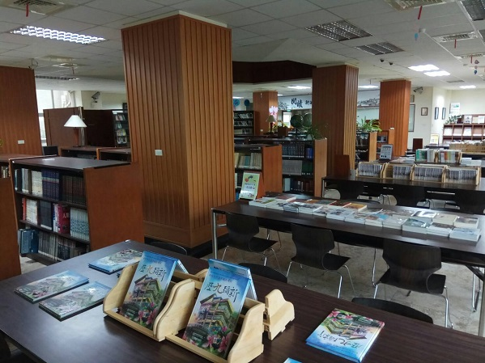

一樓是有一間位學習中心，簡單來說就是第三間電腦教室，另外還有一個空間是給各個社團發表成果展示的。
二樓的外面是借書處和幾台電腦，入口還有一個防盜磁門，所有的書想要帶出去都必須先在櫃台登記並消磁，
裡面也散布著幾台電腦，然後就是普通書籍的存放處，沙發和高級木桌椅可以讓你直接在裡面安靜的讀書。
三樓是一個採光微暗的地方，一個個比人還高的獨立書櫃放滿了更加專業、更加有學識的書籍，讓這裡充滿了神秘的氣息，
我曾經在這裡找到了一本很喜歡的偏向小說的經濟學書。
和一般外面死板板的圖書館不一樣，這裡集結了各種書籍，連新一代的漫畫、輕小說等年輕文作都收藏很多，
在靜靜的午後時光，躺在室內的沙發上，享受窗外撒下的熙熙陽光和空調的舒適，
搭配著賞心悅目的書籍和令人放鬆的書香，是個打發時間的好去處。
四樓是一個像視聽教室一樣座位高低型的會議廳，不定時會邀請到校外的專業人士來這裡舉辦講座，
外面則是空間很大的作品展示廳，也一樣不時的會展示很厲害的作品 !
點擊我回到上一頁